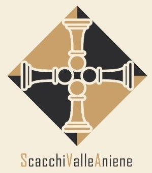

S.V.A. Carnival Chess Trophy
Tivoli 2027

A.S.D.
Scacchi
Valle dell'Aniene
5 – 7 febbraio 2027
Park Hotel Imperatore Adriano
Via G. Garibaldi 167, Guidonia (RM)
Montepremi € 4.000
- 5 turni, 90'+30''
- Open A, ELO ≥ 1900
- Open B, ELO 1700-2000
- Open C, ELO < 1700
- Sono previste wild card
 Con il patrocinio
Con il patrocinio
dell'Amministrazione
Comunale di Tivoli
Tutto sul torneo
- IscrizioniQuote, scadenza del 31 gennaio, bonifico e wild card.
- IscrittiChi si è già iscritto, open per open.
- Programma e premiOrari dei cinque turni, montepremi dei tre open, premi speciali e premiazione.
- RegolamentoIl testo completo del bando, diviso per argomenti.
- OspitalitàL'albergo che ospita il torneo, la convenzione per i giocatori, come arrivare.
- TivoliLa città del torneo nei giorni del Carnevale, e cosa vedere tra un turno e l'altro.
- Turni e risultatiAccoppiamenti e risultati, aggiornati alla fine di ogni turno.
- PartiteLe partite del torneo da rivedere mossa per mossa.
- FotoLe immagini della sala di gioco e della premiazione.